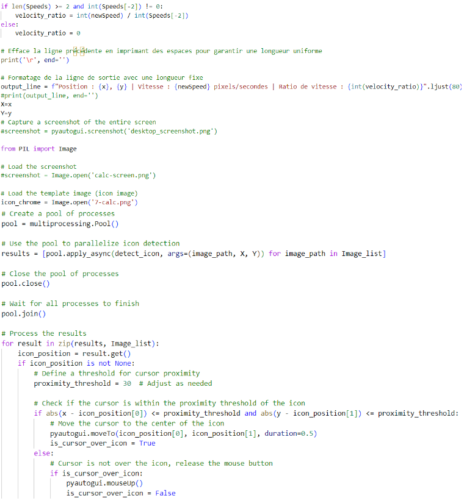
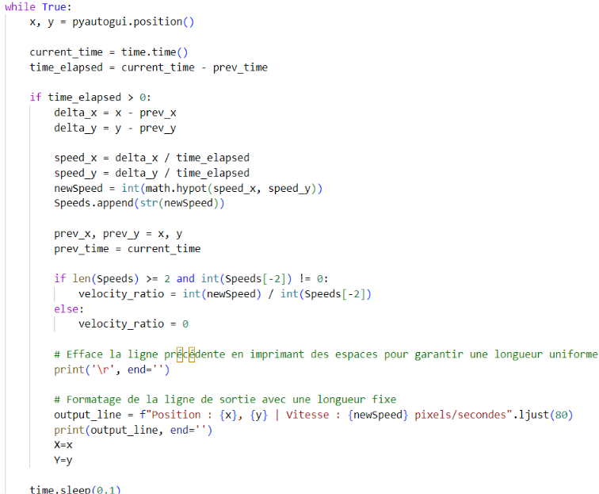

Fiche Présentative AxHelper
Objectif : AxHelper -> logiciel luttant contre les tremblements
Description
Dans le cadre de mon BTS SIO option SLAM, j'ai développé une application nommée AxHelper, destinée à assister les personnes souffrant de forts tremblements en améliorant la précision de l'utilisation de la souris. AxHelper est une solution innovante qui stabilise les mouvements du curseur, déplace un tracker vers les icônes les plus proches et propose une confirmation de clic via une touche du clavier. Elle est spécialement conçue pour faciliter et rendre plus précise l'interaction avec l'ordinateur pour les utilisateurs ayant des tremblements importants.
Fonctionnalités principales
- Stabilisation du curseur : Réduction des vibrations indésirables de la souris en ajustant automatiquement la position du curseur pour qu'il se fixe sur les icônes les plus proches.
- Tracker intelligent : Le tracker se déplace vers les icônes les plus proches et se bloque sur elles, permettant une interaction précise avec les éléments de l'interface utilisateur.
- Confirmation de clic : Possibilité de confirmer les clics à l'aide d'une touche du clavier, évitant ainsi les clics accidentels et offrant une meilleure maîtrise.
- Interface conviviale : Interface utilisateur simple et intuitive, permettant une configuration facile de l'application selon les besoins spécifiques de l'utilisateur.
Technologies utilisées
- Langage de programmation : Python
- Bibliothèques utilisées : PyAutoGUI pour la gestion des mouvements de la souris et des clics, Tkinter pour l'interface utilisateur, et OpenCV pour la détection des icônes.
Objectifs pédagogiques
Ce projet m'a permis de développer et de renforcer mes compétences en programmation Python ainsi qu'en :
- Interaction et manipulation des périphériques d'entrée (souris, clavier).
- Développement d'algorithmes de traitement de signal pour la stabilisation des mouvements.
- Utilisation de la vision par ordinateur pour la détection et le suivi des icônes.
- Conception et développement d'interfaces utilisateurs avec Tkinter.
- Gestion des événements et des interactions en temps réel.
Perspectives d'amélioration
- Ajout d'options de personnalisation avancées pour ajuster la sensibilité et le comportement de l'application en fonction des besoins individuels des utilisateurs.
- Intégration de l'apprentissage automatique pour mieux prédire et ajuster les mouvements en fonction des habitudes de chaque utilisateur.
- Développement de versions compatibles avec différents systèmes d'exploitation.
- Amélioration continue de l'interface utilisateur pour une meilleure expérience et accessibilité.
Déploiement
Nous avions une semaine pour terminer le projet. Afin d'assurer un rendu de toutes les missions, nous avons créé un Trello sur lequel nous avons ajouté toutes les missions. Grâce à ce Trello, nous avons pu planifier nos activités et également savoir où nous en étions.
Extrait de code

